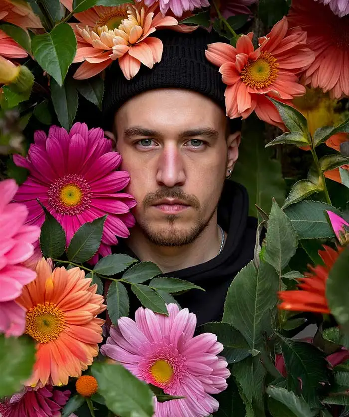
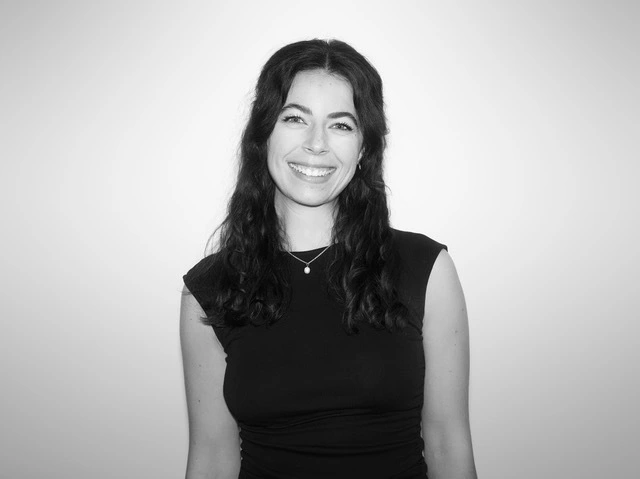
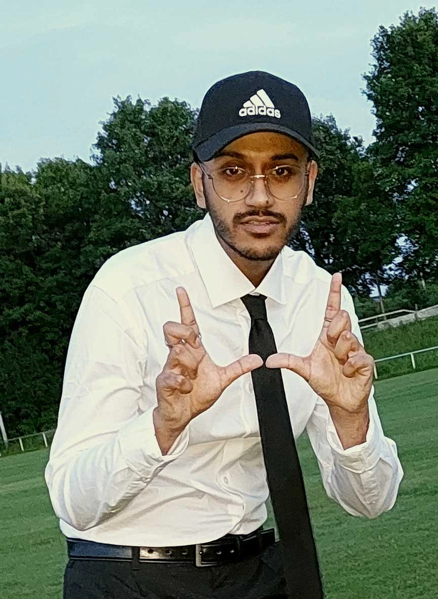
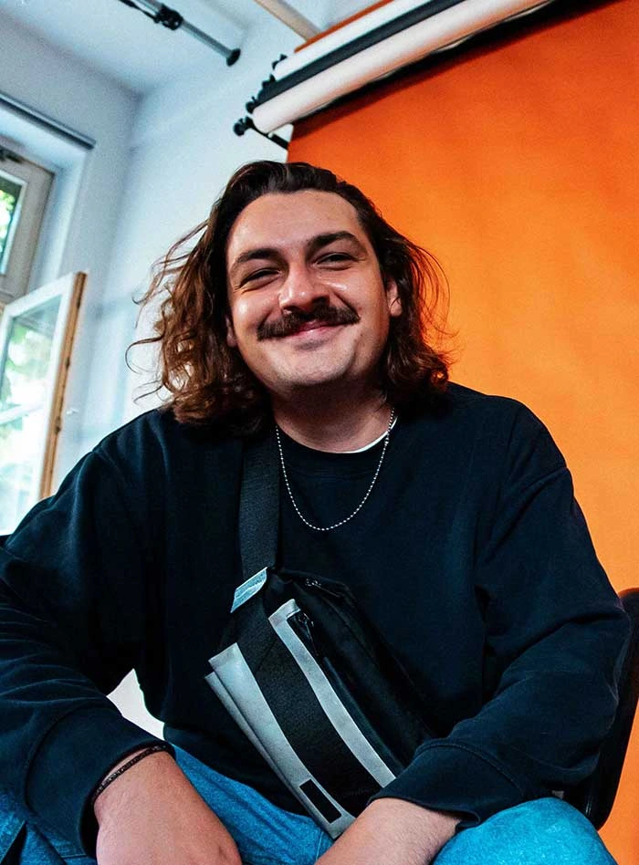
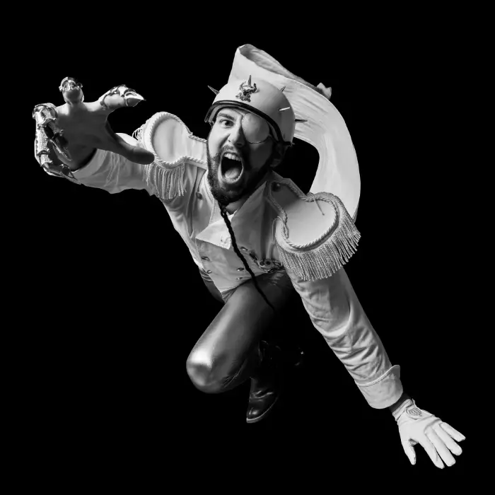

Freitag

12 00 — 13 30h
Workshop
Fred
Wolter
BZGUS—Bundeszentrale
gegen gestalterische
Unredlichkeit und Satzverrohung
Wolter
gegen gestalterische
Unredlichkeit und Satzverrohung

14 00 — 15 30h
Workshop
Cora Jessica
Pereghy
Dozentin / Schwerpunktmodul
Advertising
Pereghy
Advertising

16 00 — 17 30h
Workshop
Tanmoy
Roy
Absolvent Master
Roy
Samstag


12 — 13h
Workshop
Edgar Koop und Jonas Stadter
Alumni / Motion Designer und CEOs Acid Soup

13 — 13 45h
Zeig es uns!
Mappenberatung

14 — 15 30h
Workshop
Jean-Claude Hamilius
Prof. Dipl.-Des.—Executive Creative Director

16h
Event
Komma release

16 30 — 18h
Workshop
Paul
Hartmann
Student der Fakultä
Hartmann
Sonntag

12 — 14h
Duftlabor workshop
Falk
Kastell
Künstler / Alumnus der Fakultät
14 — 15h
Zeig es uns!
Mappenberatung


16h
KiJ Disco
Martin Kim und Stefan Apfel
Professor der Fakultät und
Alumnus Stefan / künstlerischer Mitarbeiter
Alumnus Stefan / künstlerischer Mitarbeiter